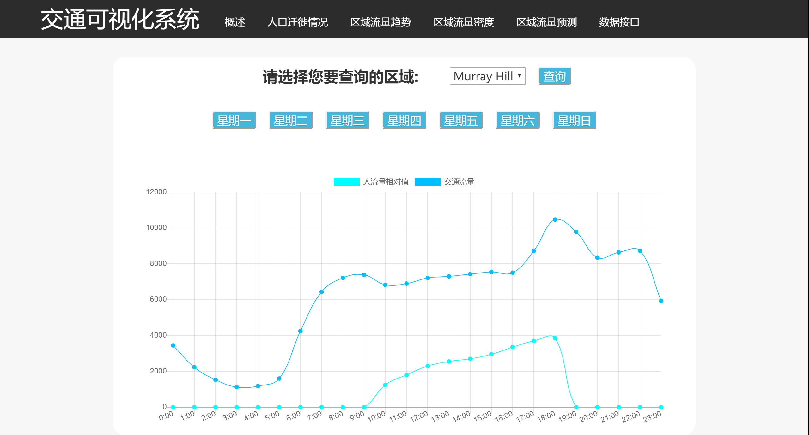
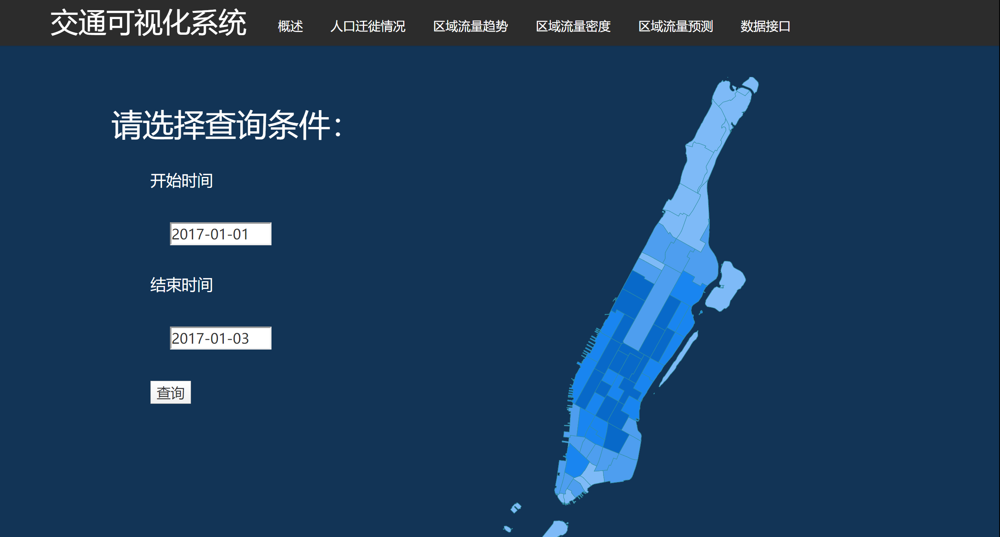
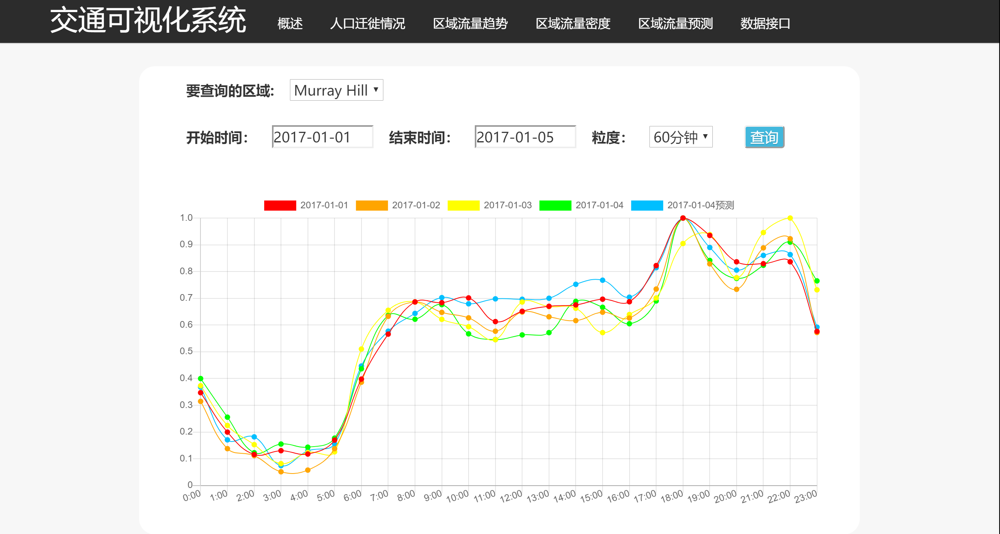

数据接口概述
| 车间 | 产量 | 电量 | 单耗 |
|---|---|---|---|
| 109 | 13 | 1.34 | 213 |

商圈交通流量与人流量对比可视化
对于较大的商圈而言，交通流量与人流量之间是存在一定相关性的，人们可以根据交通流量与人流量对比，再结合自身的需要，选择合适的出行时间和出行方式。

纽约城市交通流量热力图查询展示
从区域交通流量可以看出区域的繁忙程度，交通流量的可视化展示可为人们的出行提供参考。

区域交通流量预测
交通流量预测对于出行计划的选择和道路交通规划而言都是极其重要的，本文采用时空动态网络进行预测。